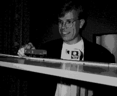
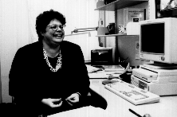

Tekniske utfordringer i Andersen Consulting


i) En av Andersen Consultings tekniker i arbeid
ii) Grafiske brukergrensesnitt er gøy!
Utfordringer:
- Prosjektdeltakelse som teknisk ressursperson, applikasjonsarkitekt og
utvikler i prosjekter som:
- Utvikling av tekniske arkitekturer for Windows, UNIX, OS/2 og NT
- Objekt orientert utvikling
- Programmering i C/C++
- Foundation CASE-verktøy for design & utvikling av meldingsbaserte
applikasjoner over flere plattformer
- Faggrupper for arkitektur, nettverksteknologi, objektorientert utvikling,
arbeidsflyt, GIS, GUI
- Faglig oppdateringer på seminarer og kurs i USA,
Nederland, Frankrike og Norge